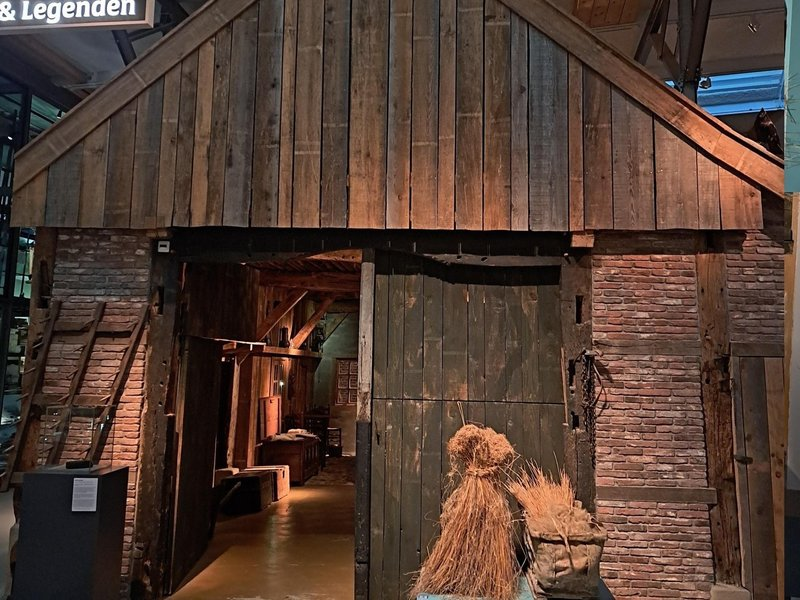

1. Willkommen bei „Los Hoes“

Willkommen zum Audioguide „Los Hoes: Das Bauernleben in Twente“ der Museumfabriek!
In dieser Führung erzählen wir vom bäuerlichen Leben in Twente seit etwa 1100 n. Chr.
Man erfährt, wie die Menschen lebten, was sie aßen und tranken, was ihre wichtigsten Beschäftigungen waren und vieles mehr.
Du kannst „Los Hoes“ mithilfe eines QR-Codes und deines Handys erkunden. Verwende Kopfhörer oder lies den Text in Ruhe auf deinem Bildschirm.
Auf deinem Handy kannst du selbst bestimmen, wie viel du hören möchtest. Mit einem Knopfdruck gelangst du zur nächsten Geschichte.
Die gesamte Geschichte dauert etwa 30 Minuten. Wenn du mehr erfahren möchtest, kannst du zusätzliche Informationen lesen oder dir Fotos oder Videos ansehen. Manchmal gibt es weitere Hintergrundinformationen über die Schaltfläche „Mehr Info“ oder im „Atlas von Ooit“.
Wir beginnen mit der Entstehungsgeschichte und dem Bau von „Los Hoes“. Später erzählen wir unter anderem, woher der Name „Los Hoes“ stammt.
Viel Spaß!